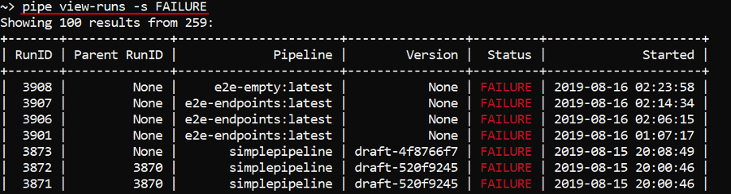
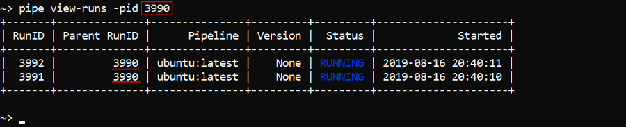

14.5. Manage pipeline executions via CLI
- View pipeline runs
- Schedule a pipeline execution
- Run a single command or an interactive session over the SSH protocol
- Stop a pipeline execution
- Terminate a node
Cloud Pipeline CLI has to be installed. See 14. Command-line interface (CLI).
View pipeline runs
The command to view runs info:
pipe view-runs [OPTIONS] [RUN_ID]
| Options | Description |
|---|---|
| Non-required options | |
-s / --status [ANY | FAILURE | PAUSED | PAUSING | RESUMING | RUNNING | STOPPED | SUCCESS] |
List pipeline runs with a specific status |
-df / --date-from |
List pipeline runs started after specified date |
-dt / --date-to |
List pipeline runs completed before specified date |
-p / --pipeline |
List history of runs for a specific pipeline |
-pid / --parent-id |
List runs for a specific parent pipeline run |
-f / --find |
Search runs with a specific substring in run parameters values |
-t / --top |
Display top N records |
-nd / --node-details |
Display node details |
-pd / --parameters-details |
Display parameters |
-td / --tasks-details |
Display tasks |
That command without any arguments will list all active runs available for the current user (more about permissions see here):

To view information about specific run - enter its RunID at the end of the command, e.g.:
You can additionally display information about instance used by a specific run - by the -nd (--node-details) flag:
You can additionally display information about pipeline parameters used by a specific run - by the -pd (--parameters-details) flag:

You can additionally display information about run tasks - by the -td (--tasks-details) flag:
Note: by default, the view-runs command outputs information about active runs.
To view a list of all runs with a specific status (see possible values in the table above) - use the -s (--status) option, e.g. to view a list of failed runs:
pipe view-runs -s FAILURE

By default, only last 100 records are displayed. If you want to change this count, use the -t (--top) option with specifying a number of records to show, e.g.:

Option -df (--date-from) allows to output runs started after specified datetime.
Datetime shall be specified in one of the following formats: yyyy-MM-dd HH:mm:ss or yyyy-MM-dd, e.g.:

Option -dt (--date-to) allows to output runs completed before specified datetime.
Note: since the view-runs command outputs by default information about active runs, then for using that command with the -dt option one of the completed statuses must be specified, e.g.:

To list history of runs for a specific pipeline use the -p (--pipeline) option and a pipeline name.
By default it will print a list of active runs for the latest pipeline version. If you want to launch non-latest pipeline version, specify version name after the pipeline name using the @ symbol, e.g. to list STOPPED runs for the v1 version of the simplepipeline pipeline:
pipe view-runs -p simplepipeline@v1 -s STOPPED
To list child runs use the -pid (--parent-id) option and a parent run ID, e.g.:

To find runs with a specific substring in run parameters values use the -f (--find) option. E.g. to find among all stopped runs only those which parameter values contain the word "Changed":
pipe view-runs -s STOPPED -f "Changed"
Schedule a pipeline execution
The command to shedule a pipeline/version execution:
pipe run [OPTIONS] [RUN_PARAMETERS]
| Options | Description |
|---|---|
| Non-required options | |
-n / --pipeline |
Pipeline name or ID |
-c / --config |
Pipeline configuration name |
-di / --docker-image |
Docker image |
-it / --instance-type |
Node type in terms of the Cloud Provider |
-id / --instance-disk |
Instance disk size |
-ic / --instance-count |
Number of worker instances to launch in a cluster |
-nc / --cores |
Number of cores that a cluster shall contain. This option will be ignored if -ic (--instance-count) option was specified |
-r / --region-id |
Instance Cloud region |
-pt / --price-type [spot | on-demand] |
Price type |
-t / --timeout |
Timeout (in minutes), when elapsed - run will be stopped |
-cmd / --cmd-template |
Command template |
-p / --parameters |
Returns a parameter list for the specified pipeline |
-pn / --parent-node |
Parent instance Run ID. Allows to run a pipeline as a child job on the existing running instance |
-s / --sync |
Allows a pipeline to be run in a sync mode. When set - terminal will be blocked until the pipeline won't finish the run. After that the pipeline's finish status will be returned into the terminal output and the terminal will be unblocked |
-np / --non-pause |
Allows to switch off the auto-pause option. Note: this option is supported for on-demand runs only |
-y / --yes |
Do not ask confirmation |
-q / --quiet |
Quiet mode |
RUN_PARAMETERS - list of the pipeline parameters to set. Can be specified as a single --<Parameter name> <value> pair or a list of them.
In the example below the pipeline with the name simplepipeline will be launched:
pipe run -n simplepipeline -y
And then we'll check that it was launched by the view-runs command:

If not additionally specified, described command will launch default configuration of the pipeline latest version.
If you want to launch non-default pipeline configuration, specify its name with the -c (--config) option, e.g.:
pipe run -n simplepipeline -c new-config -y
In the example above the configuration with the name new-config of the pipeline simplepipeline was launched.
If you want to launch non-latest pipeline version, specify version name after the pipeline name using the @ symbol, e.g.:
pipe run -n simplepipeline@v1 -y
In the example above default configuration of the version with the name v1 of the pipeline simplepipeline was launched.
Change execution environment
You can change execution environment for a pipeline run by setting the following options: -di (--docker-image), -it (--instance-type), -id (--instance-disk), -r (--region-id).
In the example below the pipeline simplepipeline will be launched on the instance n1-highcpu-2 with the disk size 25 Gb:
pipe run -n simplepipeline --instance-type n1-highcpu-2 --instance-disk 25 -y

Note: for the
-di(--docker-image) option shall specify a full path to the Docker image including its version.
Change advanced options
You can change advanced options for a pipeline execution by setting the following options: -pt (--price-type), -t (--timeout), -cmd (--cmd-template).
E.g. the command below will launch the pipeline simplepipeline with the spot price type and changed command template:
pipe run -n simplepipeline -pt spot -cmd "sleep 1d"
Note:
-ptflag could take only one from two values -on-demandandspot, independent on the Cloud Provider.
Setting parameters for a launch
To view all parameter list for a pipeline use -p (--parameters) flag, e.g. to view parameters of the simplepipeline pipeline:
pipe run -n simplepipeline -p

As you can see, that flag allows to view all parameters with their types.
If parameters have default values they will be also printed.
To set parameters for a pipeline launch, enter them after all options in the following manner: --<Parameter1 name> <value> --<Parameter2 name> <value> ..., e.g.:
pipe run -n simplepipeline --booleanParamExample false --stringParamExample "Changed test value" -y

Launch a cluster
You can launch a cluster using -ic (--instance-count) option. It sets a number of worker instances.
In the example below the cluster with two child nodes will be launched:
pipe run -n simplepipeline -ic 2

Also you can launch a cluster using the -nc (--number-cores) option. With this option you specify a number of cores that a cluster shall contain. In that case worker instance count of the cluster will be calculated automatically based on the supported instance types.
Note: This option will be ignored if -ic (--instance-count) option was specified.
In the example below the cluster runs with 16 cores will be launched:
pipe run -n simplepipeline -nc 16
As you can see, for that run single instance with 16 cores was scheduled.
Launch a pipeline in a synchronized mode
You can launch a pipeline in a synchronized mode by setting the -s (--sync) flag. In that mode terminal will be blocked until the pipeline won't finish the run. After the pipeline's finish, its status will be returned into the terminal output and the terminal will be unblocked.
Example of the pipeline simplepipeline execution in a sync mode:
pipe run -n simplepipeline --sync -y
Launch a job on the existing running instance
You can launch a pipeline as a child job on the existing running instance by setting the -pn (--parent-node) option. It allows not to initialize a new node for a such job but use already existing one.
Example of the launching the pipeline simplepipeline as a child of the previously launched and initialized instance:
pipe run -n simplepipeline --parent-node <Parent RunID> -q -y

Run a tool
Also you can launch a tool - without providing a pipeline name/ID. In that case Docker image shall be mandatory specified. If instance type, instance disk and cmd template aren't specified, default tool settings for them will be used.
In the example below we will launch the Docker image ubuntu:latest on the n1-highcpu-2 instance with the disk size 27 GB and sleep infinity command template:
pipe run -di <Docker image path> -it n1-highcpu-2 -id 27 -cmd "sleep infinity" -y

Note: Docker image path shall be specified in a full manner including version.
Generate pipeline launch command via the GUI
The construction of the correct run command sometimes could be hard for users, so users can generate necessary launch commands via the GUI.
For that:
- Via the GUI open the Launch page of a pipeline/tool you want to run
- At the Launch page, configure all settings for the run as you want and then click the "CLI command" button in the right-upper corner:

- In the appeared popup copy the
pipe runcommand, e.g.:
- Paste the copied command into the terminal and perform it
Note: instead of step 2 described above, you may open the Run logs page of any active/completed run and click the LAUNCH COMMAND button in the right-upper corner to view the launch command of the selected run:

Also, user can select the API tab in the "Launch commands" popup and get the POST request for a job launch:

Run a single command or an interactive session over the SSH protocol
Note: to perform a command or run an interactive session over the running job, user shall be the OWNER of that job or has an ADMIN role.
The command to run a single command or an interactive session over the SSH protocol for the specified job run:
pipe ssh RUN_ID [COMMAND]
COMMAND - a single command to execute over the running instance with the specified Run ID using the SSH protocol.
In the example below we will list the content of the root directory of the job run with ID 12370:
pipe ssh 12370 'ls -l /root'
If COMMAND isn't specified, it will start an interactive session over the running instance with the specified Run ID using the SSH protocol. To exit from the interactive session use commands exit or logout.
We will perform the same command as was in the example above but in the interactive session:

Stop a pipeline execution
The command to stop a specific running pipeline:
pipe stop [OPTIONS] RUN_ID
| Options | Description |
|---|---|
| Non-required options | |
-y / --yes |
Do not ask confirmation |
In the example below we will run a pipeline and then stop it:

Terminate a node
The command to terminate a specific calculation node:
pipe terminate-node [OPTIONS] NODE_NAME
| Options | Description |
|---|---|
| Non-required options | |
-y / --yes |
Do not ask confirmation |
NODE_NAME - calculation node name (ID). You can know it, for example, by the view-runs command with the -nd option, the view-cluster command or via the GUI.
In the example below we will terminate a node of the running pipeline: